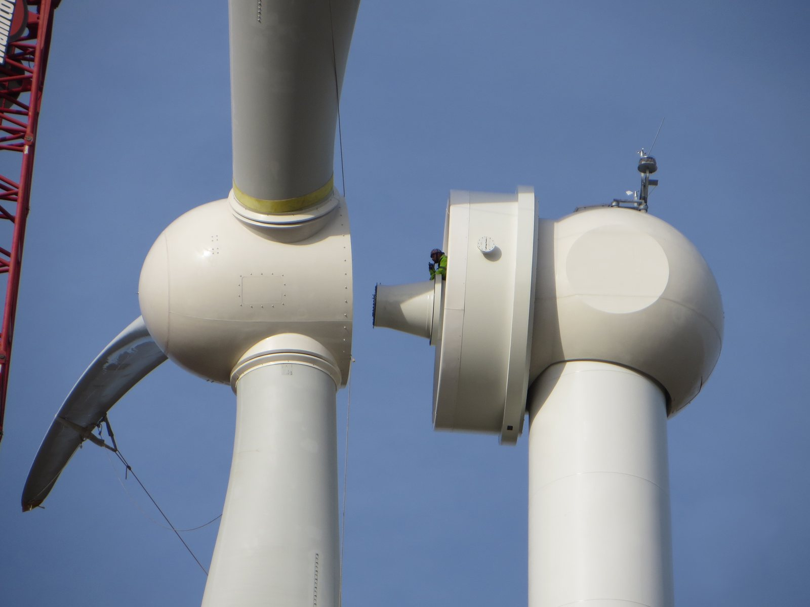

Popyt i zastosowania końcowe
Najważniejsza dana: 2024 rok - "Electric motors contain no rare earth metals." Dla inwestora to czytelny sygnał, że wzrost elektromobilności nie musi automatycznie przekładać się na proporcjonalny wzrost zużycia REE. 2
W skrócie
Popyt na pierwiastki ziem rzadkich (REE) rośnie przede wszystkim wraz z wykorzystaniem magnesów trwałych w pojazdach, turbinach, elektronice, obronności i robotach, choć katalizatory, szkło i medycyna nadal tworzą istotny rynek niemagnesowy. Magnesy odpowiadają za około 95% wartości zużycia REE, a popyt na kluczowe pierwiastki magnesowe ma wzrosnąć o jedną trzecią do 2030 r., co wzmacnia znaczenie całego Łańcuch magnesów trwałych NdFeB i SmCo. Zmiana technologii nie przebiega jednak równomiernie: część silników obywa się bez REE, podczas gdy obronność i robotyka nadal potrzebują małych, mocnych i odpornych cieplnie magnesów. Wygrywać mogą producenci materiałów magnesowych, natomiast odbiorcy zależni od Chin ponoszą ryzyko kosztowe i operacyjne, bo dywersyfikacja podaży wymaga około 60 mld USD inwestycji do 2035 r. Dla inwestora oznacza to strukturalny trend wzrostowy opisany szerzej w Rynek: bilans podaż-popyt, ceny, prognozy do 2035, ale z istotnym ryzykiem substytucji i koncentracji dostaw. 33

Rycina 23: Generator bezprzekładniowy z magnesami trwałymi w turbinie wiatrowej - przykład kluczowego zastosowania końcowego napędzającego popyt na ziemie rzadkie.1
Pojazdy elektryczne
PMSM, czyli silnik synchroniczny z magnesami trwałymi, pozostaje standardem: w 2024 r. silniki zawierające REE miało 87% światowego rynku pojazdów elektrycznych, choć do 2036 r. udział napędów bez REE ma dojść do 30%. Szacowana intensywność wynosi średnio 1,5 kg magnesów na pojazd lub 7,5 g/kW mocy, ale zakres to 0-4 kg i do 15 g/kW; kW oznacza kilowat. Dla inwestora szeroki przedział zużycia oznacza, że sam wzrost sprzedaży aut nie wystarcza do wiarygodnego oszacowania popytu materiałowego. 45
Tesla zadeklarowała w 2023 r. przyszły silnik bez REE po ograniczeniu ich ilości w napędzie Modelu 3 o 25% od 2017 r., lecz Model Y miał około 500 g jednego materiału REE i po 10 g dwóch innych. BMW Gen5 już stosuje EESM, czyli silnik synchroniczny wzbudzany elektrycznie, bez REE; dostępne moce to 140-360 kW, a sprawność w najczęstszych warunkach przekracza 95%. Pokazuje to, że substytucja opisana szerzej w Substytucja i ograniczanie zużycia jest realnym ryzykiem dla dostawców magnesów, choć tempo wdrożeń zależy od decyzji poszczególnych producentów. 6728
Renault sprzedaje masowo EESM od 2012 r., a E7A ma 200 kW, mimo że według firmy magnesy występują w 90% aut elektrycznych. Audi rozwija z kolei alternatywę indukcyjną w Q6 e-tron o mocy systemowej 285 kW oraz SQ6 e-tron o mocy 360 kW. Dla inwestora oznacza to konkurencję wielu architektur napędu, która premiuje producentów zdolnych obsługiwać różne rozwiązania zamiast jednej technologii. 91011
Energetyka wiatrowa
Direct-drive to generator bez przekładni, zwykle z magnesami NdFeB, czyli neodymowo-żelazowo-borowymi; morska turbina takiego typu potrzebuje ponad 600 kg magnesów na MW, gdzie MW oznacza megawat. Siemens Gamesa zabezpieczyła dostawy NdPr, czyli neodymu i prazeodymu, od 200 t rocznie w 2026 r. do 400 t rocznie w latach od trzeciego do piątego. Dane dla innych konstrukcji są mniej porównywalne: dla Goldwind ilość na MW jest NIE UJAWNIONA, a MingYang OceanX nie jest czystym direct-drive, ponieważ ma dwa hybrydowe generatory po 8,3 MW, łącznie 16,6 MW. Dla inwestora umowy odbioru są mocniejszym sygnałem przyszłego popytu niż próby mechanicznego przeliczania mocy każdej turbiny na zużycie REE. 121314
Różnica technologiczna jest materialna: Vestas podaje, że napęd przekładniowy zużywa do 10 razy mniej REE niż bezprzekładniowy. GE Vernova nie mieści się jednak w prostym podziale na producentów przekładniowych, bo Haliade-X ma generator z magnesami trwałymi direct-drive i warianty 12, 13 oraz 14 MW. Dla inwestora liczy się więc miks konkretnych modeli i architektur, a nie wyłącznie tempo przyrostu mocy wiatrowych. 1516
Elektronika i audio
HDD, czyli magnetyczny dysk twardy, pozostaje rynkiem dla małych magnesów, choć producenci nie ujawniają kg REE na dysk. W 2024 r. dostawy wyniosły 123,9 mln sztuk, a pojemność 1337 EB, czyli eksabajtów; Seagate dostarczył 49,7 mln sztuk i 150,8 EB. Western Digital wdrożył przy tym odzysk REE z HDD w procesie obniżającym emisje o 95%. Dla inwestora oznacza to dojrzały rynek, na którym wzrost pojemności i recykling mogą być ważniejsze niż sama liczba sprzedanych urządzeń. 1718
Smartfon zawiera około 8-10 REE rozproszonych między ekranem, głośnikami, aparatem i silnikiem wibracyjnym, lecz OIS, czyli optyczna stabilizacja obrazu, wibracje, głośniki telefonu i pozostały sprzęt audio nie mają publicznego bilansu gramów. W iPhonie Taptic Engine odpowiadał za około 25% wszystkich REE, a Apple zobowiązał 500 mln USD wobec MP Materials na amerykański recykling REE. Dla inwestora duża skala rynku końcowego nie przekłada się tu łatwo na wolumen surowca, za to zwiększa atrakcyjność zamkniętego obiegu materiałów. 192021
Obronność
Departament Obrony USA zużywa mniej niż 0,1% globalnego popytu na REE, ale okręt podwodny klasy Virginia wymaga około 9200 funtów. Dla F-35 GAO powtarza ponad 900 funtów, podczas gdy niezależna rekonstrukcja wskazuje 40-70 kg gotowych materiałów zawierających REE, w tym około 23 kg stopu SmCo, czyli samarowo-kobaltowego. PGM, czyli amunicja precyzyjnie naprowadzana, ma według słabego szacunku 0,1-2 kg magnesów NdFeB na sztukę. Dla inwestora obronność jest niewielkim rynkiem wolumenowo, lecz może oferować wysoką strategiczną wartość i większą odporność popytu. 22222324
Dla radarów AESA, czyli radarów z aktywnym skanowaniem elektronicznym, oraz sonarów masa SmCo jest NIE UJAWNIONA, choć materiał pracuje od -55°C do 300°C. Równocześnie plan USA przechodzi od 30 000 jednorazowych dronów uderzeniowych do ponad 300 000 na początku 2028 r., przy szacowanym 98% udziale Chin w produkcji magnesów REE. Dla inwestora to przykład, w którym bezpieczeństwo dostaw opisane w Geopolityka i koncentracja łańcucha dostaw może ważyć więcej niż koszt jednostkowy materiału. 2526
Robotyka
Słaby szacunek przypisuje Tesla Optimus 40 silników i 90% zależności ich magnesów od Chin, ale kg REE na robota są NIE UJAWNIONE. Popyt końcowy staje się jednak bardziej namacalny: Figure 02 w ciągu 10 miesięcy wspierał produkcję ponad 30 000 BMW X3 i przeniósł ponad 90 000 części w około 1250 godzin pracy. Dla inwestora robotyka jest obiecującym źródłem popytu, ale brak danych o intensywności materiałowej utrudnia wycenę jej wpływu na rynek REE. 2728
Unitree raportował ponad 5500 dostarczonych humanoidów w 2025 r., a oczekiwany przychód 252 mln USD wobec 58 mln USD w 2024 r. W serwonapędach przemysłowych, czyli precyzyjnie sterowanych silnikach robotów, Fanuc ma 10% światowego rynku i 7,2 mld USD przychodu w 2025 r., lecz Fanuc, Yaskawa i ABB nie ujawniają kg REE na serwonapęd. Dla inwestora przychód producentów robotów potwierdza rozwój branży, ale nie powinien być przeliczany wprost na popyt materiałowy. 29303132
Zastosowania niemagnesowe
Katalizatory stanowiły 60% rozkładu zastosowań REE w USA w 2015 r., a w raporcie z 2022 r. 74%, bez rozdzielenia lantanowych katalizatorów FCC, czyli krakingu ciężkich frakcji ropy, od cerowych katalizatorów samochodowych. Słabe źródło szacuje popyt na lantan na 32 000 t, a jego cena dochodziła w maju 2011 r. do 140 USD/kg; ilość ceru na samochód jest NIE UJAWNIONA. Dla inwestora duży udział katalizatorów potwierdza znaczenie rynku niemagnesowego, ale niejednorodne kategorie ograniczają porównywalność danych. 33343536
Akumulator NiMH, czyli niklowo-wodorkowy, w hybrydzie Toyota Prius lub Honda Insight zawiera według słabego szacunku 10-15 kg REE, a preparaty do polerowania szkła mogą zawierać 40-99,5% wagowo tlenku ceru. Chińskie luminofory oświetleniowe zużyły w 2021 r. 332 t itru i 30 t europu, lecz popyt ma spaść o 87-100% do 2060 r. Dla inwestora to przypomnienie, że dojrzałe zastosowania mogą zapewniać bieżący popyt, ale są narażone na zmianę technologii. 373839
W laserach i światłowodach telekomunikacja ma około 35% popytu na wysokoczysty tlenek iterbu. MRI, czyli rezonans magnetyczny, wykorzystuje gadolinowe środki kontrastowe w około 30 mln badań rocznie, a ponad 90% łańcucha dostaw gadolinu przypada na Chiny. Dla inwestora te wyspecjalizowane zastosowania mogą być atrakcyjne jakościowo, lecz koncentracja podaży nadal pozostaje kluczowym ryzykiem. 4041
Kontrowersje
Czy Tesla realnie rezygnuje z REE
Za deklaracją stoją rok 2023 i redukcja REE w Modelu 3 o 25% od 2017 r. Przeciw wdrożeniu przemawia brak potwierdzonego komercyjnego napędu bez REE na początku 2026 r. oraz około 500 g i dwie porcje po 10 g w Modelu Y. Dla inwestora jest to nadal ryzyko technologiczne, a nie potwierdzona zmiana struktury popytu. 6427
Rozstęp szacunków na pojazd i turbinę
Dla auta jedna estymacja podaje średnio 1,5 kg magnesów, a zakres sięga 0-4 kg, co tworzy rozstęp 2-3 razy między średnią a górną granicą. Dla turbiny źródła podają ponad 600 kg magnesów/MW albo 600-1000 kg NdFeB/MW, ale osobno 50-150 kg neodymu/MW lub do 232 kg NdPr/MW. Nie należy uśredniać masy całego magnesu z masą pierwiastków, bo prowadziłoby to inwestora do błędnej oceny popytu. 5124344
Ile REE ma F-35
Za wysoką liczbą stoją ponad 900 funtów w GAO oraz 920 funtów wywiedzione z raportu Congressional Research Service z 2013 r. Przeciwna rekonstrukcja daje 40-70 kg gotowych materiałów zawierających REE, w tym około 23 kg SmCo, a pierwotny, audytowalny wykaz części Lockheed Martin pozostaje NIE UJAWNIONY. Dla inwestora rozbieżność ta oznacza, że ekspozycję obronności lepiej oceniać jakościowo niż na podstawie pojedynczego przelicznika. 224523
Humanoidy: rynek czy hajp
Goldman Sachs prognozuje ponad 250 000 dostaw w 2030 r. i rynek 38 mld USD w 2035 r., a Morgan Stanley 40 000 sztuk w 2030 r. i 5 bln USD w 2050 r. Po stronie wykonania Unitree raportował ponad 5500 dostaw w 2025 r., a Figure udokumentował 1250 godzin pracy przy produkcji ponad 30 000 BMW X3 - to działalność realna, lecz nie skala prognoz. Dla inwestora robotyka pozostaje opcją wzrostową o dużym potencjale i równie dużej niepewności tempa adopcji. 46472928
HDD: wymieranie czy popyt chmurowy
Za wymieraniem przemawia to, że 2024 r. był pierwszym wzrostem rocznych dostaw od 2014 r., i to o 1,6% do 123,9 mln sztuk. Za popytem chmurowym przemawia pojemność: dostarczono 1337 EB, o 49% więcej niż w 2023 r. Obie strony mogą mieć rację, ponieważ mniej napędów może przenosić więcej danych, więc dla inwestora ważniejsza jest pojemność niż sama liczba urządzeń. 1717
Spółki powiązane
- JL MAG Rare-Earth (300748, SZSE) - profil deep
Źródła
- ilustracja - https://commons.wikimedia.org/wiki/File:One_Energy_Wind_for_Industry_permanent_magnet_direct-drive_generator.jpg
- BMW Group - https://www.press.bmwgroup.com/canada/article/detail/T0440602EN/bmw%E2%80%99s-5th-generation-electric-drive-system-wins-2024-ajac-best-green-innovation-award?language=en
- IEA - https://www.iea.org/reports/rare-earth-elements/executive-summary
- Automotive World - https://www.automotiveworld.com/news/idtechex-maps-routes-to-reduce-rare-earth-reliance/
- Thunder Said Energy - https://thundersaidenergy.com/downloads/electric-vehicles-motors-and-magnets/
- Electrek - https://electrek.co/2023/03/01/tesla-is-going-back-to-ev-motors-with-no-rare-earth-elements/
- InsideEVs - https://insideevs.com/news/655233/tesla-next-gen-eletric-motors-no-rare-earth-elements/
- Xpert Digital - https://xpert.digital/en/electric-motors-without-rare-earths
- Renault Group - https://www.renaultgroup.com/en/magazine/energy-and-powertrains/all-about-electric-motors-with-no-rare-earths/
- Renault Group - https://www.renaultgroup.com/en/magazine/energy-and-motorization/e7a-the-next-gen-electric-motor-developed-by-renault-and-valeo/
- Audi - https://www.audi.com/en/the-audi-q6-e-tron-electric-mobility-on-a-new-level-15929/sporty-performance-powerful-drives-15932
- MacroPolo - https://archivemacropolo.org/analysis/permanent-magnets-case-study-industry-chinese-production-supply/
- Energy Global - https://www.energyglobal.com/wind/12042023/arafura-and-siemens-gamesa-sign-offtake-agreement/
- OffshoreWIND.biz - https://www.offshorewind.biz/2024/12/12/photo-mingyangs-16-6-mw-dual-turbine-floating-wind-platform-enters-operation-in-china/
- Vestas - https://www.vestas.com/en/sustainability/environment/materials-and-rare-earths
- GE Vernova - https://www.ge.com/renewableenergy/wind-energy/offshore-wind/haliade-x-offshore-turbine
- Forbes - https://www.forbes.com/sites/tomcoughlin/2025/03/09/c4q-2024-hdd-industry-update/
- Tom's Hardware - https://www.tomshardware.com/pc-components/hdds/wd-launches-hdd-recycling-process-that-reclaims-rare-earth-elements-cuts-out-china
- Medium - https://medium.com/@Artiscribe/how-many-rare-earth-elements-are-really-inside-your-smartphone-52bcad82e919
- Engadget - https://www.engadget.com/2019-09-18-apple-will-use-recycled-rare-earth-metals-iphone-taptic-engine.html
- TechCrunch - https://techcrunch.com/2025/07/15/apple-commits-500m-to-u-s-based-rare-earth-recycling-firm-mp-materials/
- GAO - https://www.war.gov/News/News-Stories/Article/Article/3700059/
- Adamas Intelligence - https://www.adamasintel.com/how-much-rare-earths-does-an-f-35-really-contain/
- Rare Earth Exchanges - https://rareearthexchanges.com/rare-earth-elements-in-defense-technology/
- Apex Magnets - https://www.apexmagnets.com/news-how-tos/military-weapons-rare-earth-magnets-used-in-defense-applications/
- PR Newswire - https://www.prnewswire.com/news-releases/us-military-drone-production-relies-heavily-on-chinese-rare-earth-magnets-302776306.html
- AINvest - https://www.ainvest.com/news/tesla-optimus-robot-hit-china-rare-earths-crackdown-elon-musk-thousands-ready-year-guarantees-2504-22/
- BMW Group - https://www.press.bmwgroup.com/global/article/detail/T0455864EN/bmw-group-to-deploy-humanoid-robots-in-production-in-germany-for-the-first-time?language=en
- Yahoo Finance - https://finance.yahoo.com/news/unitree-ranks-no-1-globally-030700443.html
- Tanay Jaipuria - https://www.tanayj.com/p/unitrees-ipo-filing-the-state-of
- Visual Capitalist - https://www.visualcapitalist.com/the-worlds-top-industrial-robotics-companies-by-market-share/
- Robotomated - https://robotomated.com/learn/market/top-robotics-companies-by-revenue
- USGS - https://seekingalpha.com/uploads/2017/3/31/4974218/mcs-2016-raree.pdf
- USGS - https://pubs.usgs.gov/periodicals/mcs2022/mcs2022-rare-earths.pdf
- RareMetal.org - http://raremetal.org/top-5-critical-minerals.html
- Digital Refining - https://www.digitalrefining.com/article/1000106/fcc-catalyst-optimisation-in-response-to-rare-earth-prices
- Rare Earth Exchanges - https://rareearthexchanges.com/news/hybrid-car-boom-fuels-a-global-race-for-rare-earths/
- USPTO - https://image-ppubs.uspto.gov/dirsearch-public/print/downloadPdf/4786325
- IOP Science - https://iopscience.iop.org/article/10.1088/1748-9326/acdf74
- IndexBox - https://www.indexbox.io/blog/high-purity-ytterbium-oxide-market-forecast-points-higher-toward-2035-driven-by-fiber-laser-expansion/
- SFA Oxford - https://www.sfa-oxford.com/rare-earths-and-minor-metals/rare-earths-elements/gadolinium-market-and-gadolinium-price-drivers/
- IDTechEx - https://www.idtechex.com/en/research-article/how-can-tesla-shift-away-from-rare-earths/28820
- Farmonaut - https://farmonaut.com/mining/neodymium-kg-per-mw-in-direct-drive-wind-turbine-magnets
- Discovery Alert - https://discoveryalert.com.au/wind-power-surge-2025-rare-earth-market/
- U.S. Army - https://www.army.mil/article/227715/an_elemental_issue
- Goldman Sachs - https://www.goldmansachs.com/insights/articles/the-global-market-for-robots-could-reach-38-billion-by-2035
- Morgan Stanley - https://www.morganstanley.com/insights/articles/humanoid-robot-market-5-trillion-by-2050
- 0.1 procent - https://www.gao.gov/products/gao-24-107176
- 80 procent - https://www.usgs.gov/media/images/minerals-net-import-reliance-china
- 69.2 procent - https://elements.visualcapitalist.com/visualizing-30-years-of-rare-earth-production-by-country/